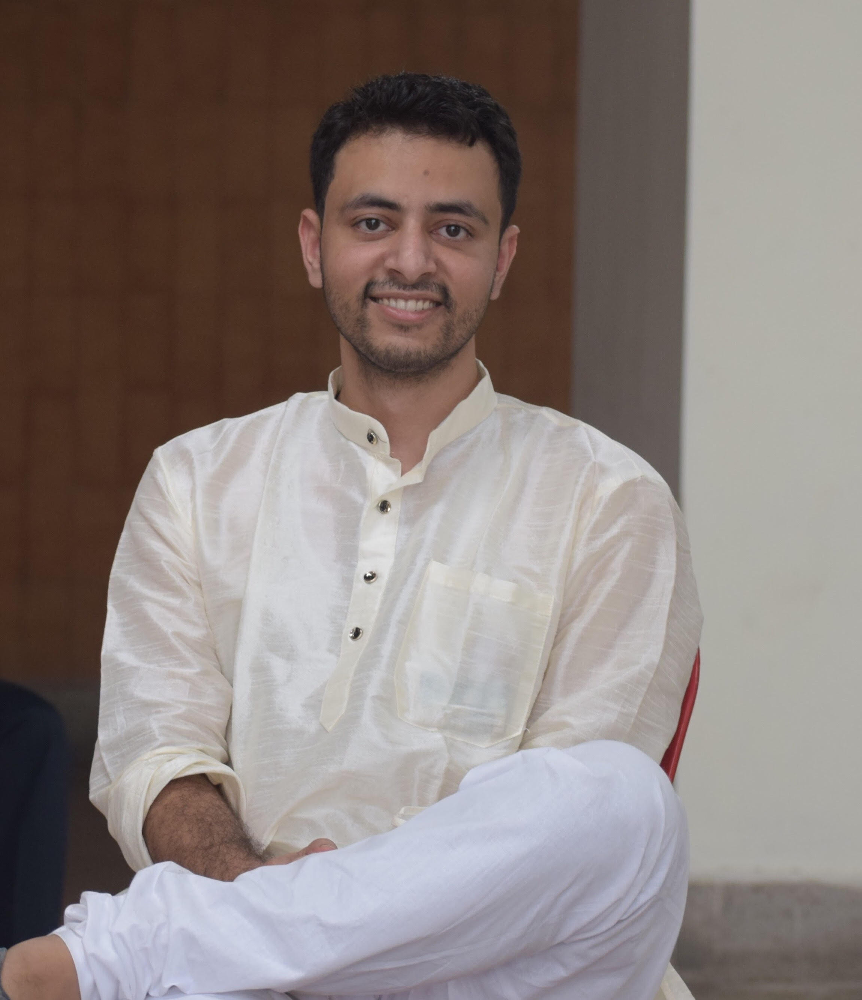

Arun Kumar
About me

Currently, I'm pursuing master's in computer science at Stony Brook University, New York.
I graduated with an undergraduate degree in mechanical engineering from IIT(BHU) Varanasi in 2017.
I've worked for 2 years EXL services as Analytics consultant working on problems of Digital marketing and banking.
And 2 years at American Express as Data Scientist working on problems of credit risk.
My interests lie in the areas of algorithmic problem solving, software development and data science.
I have relevant experience in the same along with significant exposure to analytics, finance and risk modeling.
Currently, I'm looking for summer internships ( May 2022 - july 2022) in Software Engineering and Data science roles.
Work Experiance
American Express
Data Scientist/Risk Analyst -- Jul'19 to Jul'21
I was responsible for building, maintaining and deployment of Amex’s critical Total
Structural Risk and Credit Default Scoring System (CDSS, transaction authorization) models using gradient boosting. I was responsible for assessing new data sources, like home equity, commercial bureau info, bank
statements, cellular data and changes in bureau scores versions on Amex’s proprietary models.
EXL Services
Analytics consultant -- Sep'17 to Jul'19
I worked on various projects in Digital transformation and marketing. I Automated the campaigns performance measurement using VBA. The tool now provides an
extensive report, with functionality to segment performance on financial/risk attributes and significance testing of KPIs.
I worked on various impact assessment and campaigns design problems.
ACADEMIC ACHIEVEMENTS
● Awarded the Inspire Scholarship by the Government of India for scoring among the top 1% in the All India Senior School Certificate Examination (2013).
● Secured All India Rank of 2620 and 1253 in Joint Entrance Examination (JEE) - Advance and Mains stages respectively among over a million candidates.
● Received full tuition fee waiver under the Merit cum Means Scholarship program, awarded by the Indian Institute of Technology (BHU), Varanasi.
● Won Mechanomania - a mechanical contraption design competition organized by Volvo Eicher Commercial Vehicles Limited. Subsequently, also served as the Campus Ambassador for Volvo Eicher.
● Scored an aggregate of 95.8%, highest in my school, in the All India Senior School Certificate Examination 2013.